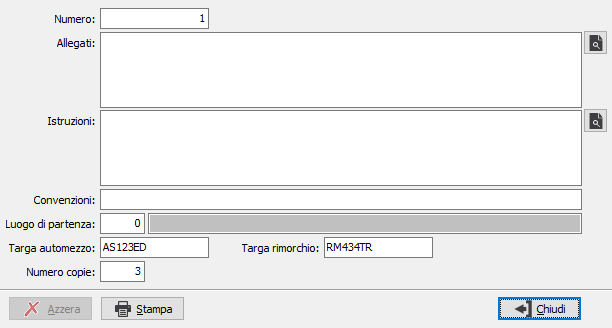

Dati lettera di vettura (CMR - Convention des Marchandises par Route)
La gestione viene attivata dal flag "Gestione documento CMR" presente nella configurazione “Vendite”.
I dati della lettera di vettura possono essere compilati attraverso l’apposito bottone presente nella pagina “Riepilogo totali” del Ddt e della fattura accompagnatoria; attraverso questa finestra è possibile compilare i dati mancanti per la corretta stampa del documento CMR (Numero, Allegati, Istruzioni, Convenzioni); la stampa viene richiesta al termine dell’inserimento del nuovo documento oppure può essere ristampata attraverso l’apposito bottone presente nella finestra.

La finestra mostra il numero proponendo, in fase di inserimento il nuovo progressivo, i dati relativi alla compilazione manuale, il luogo di partenza impostato in base alla causale del documento, la targa dell'automezzo impostata in base al documento, se presente e la targa del rimorchio da compilare eventualmente a mano; il numero copie viene preimpostato a 3.
Il pulsante Azzera consente di annullare i dati inseriti, di fatto cancellandoli; il pulsante Stampa consente la stampa del documento CMR.